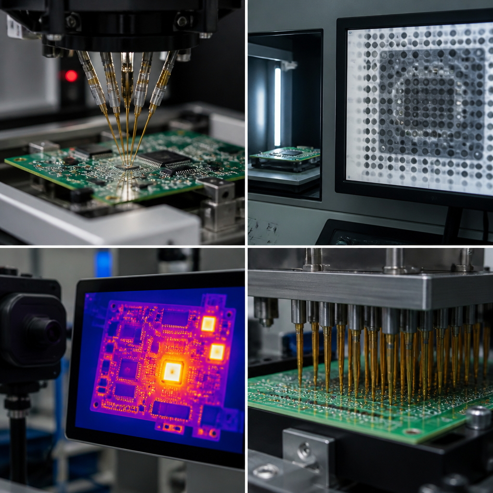

PCB testing is not a checkbox at the end of production — it is a layered defense strategy. Every test method has a detection window: a specific subset of defect types it can find reliably, and a larger set of defect types it will miss with near-certainty. The art of test engineering is assembling the minimum set of methods that together cover every failure mode your product's application cannot tolerate.
At Huaxing PCBA, we operate one of the most comprehensive in-house testing facilities among Shenzhen contract manufacturers: 4-wire Kelvin on 100% of nets for multilayer boards, 3D X-ray with void analysis down to 0.5% void fraction, inline AOI with 99.7% defect detection rate on SMT lines, and IST reliability testing with thermal cycling data extending beyond 500 cycles. This page is the reference for what each method does — and, critically, what it does not do.
The Testing Hierarchy: Why No Single Test Is Enough
Each test method operates in a specific physical domain. Electrical tests (flying probe, ICT) find opens and shorts but say nothing about solder joint metallurgy. Optical tests (AOI, SPI) find visible surface defects but cannot see under a BGA. X-ray sees hidden solder voids but cannot tell you if a net has 50 milliohms of unwanted resistance. TDR maps impedance in your transmission lines but is blind to DC opens. IST forces latent reliability defects to surface — but only on a sacrificial coupon, not on your actual assemblies.
This is the testing hierarchy: a stack of methods arranged so that every defect type falls within at least one method's detection window. The layers are not interchangeable. Skip the X-ray layer, and you ship boards with 25% void fraction under a BGA — electrically functional today, thermal-cycle failures in the field six months from now. Skip IST, and you miss the via barrel crack that opens after 200 thermal cycles.
Electrical Test
Flying probe, ICT, 4-wire Kelvin. Finds opens, shorts, wrong component values. Catch rate for netlist defects: ~98%. Misses: all visual defects, solder joint quality, latent reliability issues.
Optical Inspection
AOI, SPI, manual visual. Finds solder bridges, tombstoning, component shift, insufficient solder paste. Catch rate for visible SMT defects: ~99%. Misses: hidden joints (BGA/QFN), internal layer defects, electrical continuity issues.
X-Ray Inspection
2D X-ray, 3D CT X-ray. Finds BGA voids, hidden solder bridges, insufficient solder under area-array packages. Catch rate for hidden-joint defects: ~95% (3D). Misses: surface defects, most electrical issues, cold joints without voiding.
Impedance / Signal Integrity
TDR, VNA. Finds impedance discontinuities, trace length mismatches, via stub resonances. Catch rate for SI defects on controlled-impedance nets: ~99%. Misses: DC opens/shorts, most assembly defects.
Environmental Stress
IST, thermal cycling, HiPot. Finds latent barrel cracks, delamination, dielectric breakdown, CAF. Catch rate for latent reliability defects: ~90% (IST on representative coupons). Misses: assembly-level defects, fast-acting electrical failures.
Destructive Analysis
Cross-section, dye-and-pry, SEM/EDS. Finds plating voids, intermetallic thickness, pad cratering, inner-layer misregistration. Gold standard for root cause — but samples only, not production. Misses: board-level functional performance.
Rule of thumb: Each layer in the hierarchy adds 0.5-3% to total unit cost but eliminates a distinct class of field-failure risk. The cost of skipping a layer is not the test cost you saved — it is the field-return rate multiplied by your cost of failure. For a Class 3 aerospace board where a single field failure can cost $100K+ in investigation and rework, the full six-layer hierarchy is mandatory. For a consumer IoT board where field returns cost $15 each, layers 1-3 are usually sufficient.
Test Methods Reference: 11 Methods Compared
Each method below is evaluated across five dimensions: what it detects, what it reliably misses, cost per board (including fixture amortization where applicable), typical throughput, and the production scenario where it adds the most value. Use this table to select the methods that align with your product's cost-of-failure profile.
| Method | What It Detects | What It Misses | Cost/Board | Throughput | Best For |
|---|---|---|---|---|---|
| Flying Probe | Opens, shorts, R/L/C values, diode polarity, transistor type, net continuity | Visual defects, solder joint quality, BGA hidden joints, functional behavior, latent reliability | $0.50–2 (no fixture) | Slow: 100–500 pts/min | Prototypes, NPI, low-volume (<500 units) |
| Bed-of-Nails / ICT | Opens, shorts, component values, missing components, wrong orientation, basic powered test | Visual defects, BGA/QFN hidden joints, non-electrical failures, intermittent connections | $0.10–0.50 + $2K–10K fixture | Fast: 5K–20K pts/min | Mid-to-high volume (>500 units), stable designs |
| AOI (Automated Optical Inspection) | Solder bridges, tombstoning, missing components, polarity reversal, insufficient/excess solder, component shift, lifted leads | Hidden joints (BGA/QFN/LGA), internal layer defects, electrical opens, cold solder joints with normal appearance | $0.05–0.20 | Very fast: inline, matches SMT line speed | All volumes, inline post-reflow, all SMT assemblies |
| SPI (Solder Paste Inspection) | Paste volume/area/height, bridging, insufficient paste, misaligned deposition, stencil clogging artifacts | Post-reflow defects, component placement errors, any defect after reflow, BGA paste under package | $0.03–0.10 | Very fast: inline, pre-placement | All volumes, before pick-and-place, fine-pitch stencil processes |
| X-Ray 2D | BGA solder bridges, gross voiding (>20%), missing balls, severely insufficient solder under BGAs/QFNs | Small voids (<10%), subtle insufficient solder, cold joints, vertical void distribution, surface defects | $0.50–2 | 30–60 sec per board (manual or semi-auto) | BGA/QFN sampling, quick pass/fail screening |
| X-Ray 3D (CT) | BGA void fraction per joint (down to 0.5%), head-in-pillow, void distribution in Z-axis, via fill quality, QFN sidewall wetting | Surface defects, electrical continuity, cold joints without voiding, sub-0.5% voids in thick packages | $2–5 | Slow: 3–10 min per board | First article, failure analysis, high-rel BGA verification |
| 4-Wire Kelvin | Net resistance with micro-ohm accuracy, via barrel integrity, trace cross-section anomalies, connector contact resistance | Visual defects, solder bridges (separate test needed), functional behavior, component values outside netlist scope | $0.01–0.05 per net | Medium: net-count dependent | High-current traces, automotive power nets, aerospace, backplanes |
| TDR (Time Domain Reflectometry) | Impedance discontinuities, trace length mismatches, via stub effects, connector faults, dielectric constant variations | DC shorts/opens (use continuity test), visual defects, most SMT assembly defects, functional logic errors | $5–20 | Slow: manual or semi-automated | Controlled-impedance PCBs, high-speed digital, RF, SerDes channels |
| HiPot (High Potential / Dielectric Withstand) | Dielectric breakdown, insulation resistance below spec, creepage/clearance violations, contamination-induced leakage, CAF-induced shorts | Low-voltage functional issues, mechanical defects, opens (unless arcing), solder joint quality, logic errors | $1–5 | Medium: 10–60 sec per board | Mains-connected boards, high-voltage supplies, medical isolation barriers, EV power electronics |
| IST (Interconnect Stress Test) | Via barrel cracks, microvia separation, PTH plating voids, delamination initiation, barrel fatigue before full failure | Assembly-level defects, component reliability, functional behavior, surface defects on finished assemblies | $100–500 per coupon | Very slow: hours per cycle, destructive | High-reliability (automotive, aerospace, medical), new laminate qualification, supplier audits |
| Thermal Cycling (Air-to-Air / Liquid) | Solder joint fatigue life, CTE mismatch failures, PTH barrel cracking, laminate degradation, connector fretting corrosion | Fast-acting electrical faults, software/functional issues, defects not accelerated by thermal stress, single-event failures | $500–2K per batch | Very slow: days to weeks per profile | Reliability qualification, NPI validation, design margin testing, automotive AEC-Q100 |
| Cross-Section (Microsection Analysis) | Plating thickness and uniformity, via fill void percentage, inner-layer registration, intermetallic compound thickness, laminate voids, drill quality, solder joint microstructure | Functional defects, intermittent issues, board-level electrical performance, defects outside the section plane | $50–200 per section | Very slow: destructive, hours per section | Failure analysis, first-article inspection, process validation, supplier qualification |
Defect Coverage Matrix: Which Test Catches What
This matrix maps 12 common PCB/PCBA defect types against the 11 test and inspection methods. A checkmark indicates the method reliably detects that defect type. A cell left blank means the method either cannot detect the defect or detects it unreliably (below 50% probability). Use this to verify that your test strategy has at least one checkmark in every row that matters for your application.
| Defect Type | FP | ICT | AOI | SPI | XR2D | XR3D | 4WK | TDR | HiPot | IST | TC | XS |
|---|---|---|---|---|---|---|---|---|---|---|---|---|
| Opens (net discontinuity) | ✓ | ✓ | ✓ | |||||||||
| Shorts (net-to-net bridging) | ✓ | ✓ | ✓ | |||||||||
| Solder Bridges (visible) | ✓ | |||||||||||
| Solder Voids (BGA/QFN hidden) | ✓ | ✓ | ✓ | |||||||||
| Component Shift / Misalignment | ✓ | ✓ | ✓ | |||||||||
| Tombstoning / Drawbridging | ✓ | |||||||||||
| Insufficient Solder (visible) | ✓ | ✓ | ||||||||||
| Insufficient Solder (hidden under BGA) | ✓ | ✓ | ||||||||||
| Pad Cratering (laminate fracture under pad) | ✓ | ✓ | ✓ | |||||||||
| CAF (Conductive Anodic Filament) | ✓ | ✓ | ✓ | |||||||||
| Delamination / Blistering | ✓ | ✓ | ✓ | ✓ | ✓ | |||||||
| Via Barrel Crack / PTH Fatigue | ✓ | ✓ | ✓ | ✓ |

Test Strategy by Production Volume: A Decision Guide
Your test strategy is not dictated by which methods are "best" — it is dictated by your production volume, your cost-of-failure, and the defect types your application cannot tolerate. Below are the three canonical strategies. They are starting points, not prescriptions — adjust based on your specific risk profile.
Flying Probe + AOI + X-Ray Sampling
Core logic: Fixture investment is unjustifiable. Flying probe covers electrical test without a $5K+ fixture. Inline AOI catches visible SMT defects. X-ray one BGA per unique package to verify void levels. Total test cost: ~$2–5/board. Coverage: opens, shorts, visible solder defects, hidden-void sampling. Misses: latent reliability (not needed at this stage), 100% X-ray coverage, high-voltage safety margins. Add: 4-wire Kelvin if high-current traces are present; TDR if controlled-impedance nets exist.
ICT + AOI + SPI + X-Ray Sampling + TDR Sampling
Core logic: ICT fixture amortizes below $1/board at these volumes. SPI catches paste defects before they become reflow defects — 80% of SMT defects originate at paste print. AOI post-reflow catches placement and solder defects. X-ray sample BGAs and QFNs at AQL 1.0 (C=0). TDR sample impedance coupons. Total test cost: ~$1–3/board amortized. Coverage: comprehensive electrical, visible defects, paste process control, hidden-joint sampling. Misses: 100% X-ray, latent reliability testing. Add: HiPot for line-voltage boards; IST coupons for design validation.
Full Suite: ICT + AOI + SPI + 100% 3D X-Ray + 4WK + TDR + HiPot + IST + Thermal Cycling
Core logic: Cost of a single field failure dwarfs test cost. 100% 3D X-ray on all BGAs eliminates hidden-joint escapes. 4-wire Kelvin captures micro-ohm-level barrel defects that conventional ICT misses. HiPot verifies isolation barriers. IST on every lot provides continuous reliability monitoring — if via reliability degrades, you know within hours, not after field returns. Thermal cycling on first-article and periodic samples validates design margins. Total test cost: ~$5–15/board. Coverage: maximum. This is the automotive PPAP, medical Class III, and aerospace Class 3 profile.
Huaxing Testing Capabilities & Equipment
Huaxing PCBA operates all 11 test methods in-house — no outsourcing of test data means faster feedback, tighter process control, and complete traceability from incoming inspection through final QA. Every test data point is recorded and linked to the board serial number in our MES.
| Huaxing In-House Test Equipment & Capability Limits | |
|---|---|
| Electrical Test — Flying Probe | Takaya APT-9411, 4 flying probes, 4-wire Kelvin on 100% nets (down to 1 mΩ resolution), 0.15mm minimum pad contact. No fixture cost. Up to 24″ × 20″ panel size. |
| Electrical Test — ICT | Agilent 3070 and Teradyne TestStation LH, 10 in-circuit test fixtures. Pneumatic and vacuum-actuated. Test coverage: 92-98% typical on digital/analog mixed-signal designs. |
| AOI — Inline 3D | Koh Young Zenith 3D AOI, 8 units inline on SMT lines. 10µm pixel resolution, 360° multi-angle illumination. 99.7% defect detection rate verified by weekly GR&R studies. IPC-A-610 Class 2 and Class 3 libraries. |
| SPI — Solder Paste Inspection | Koh Young aSPIre3, 8 units inline before pick-and-place. 100% paste deposit inspection: volume, area, height, offset, bridging. Closed-loop feedback to printer with automatic offset correction. |
| X-Ray — 2D | Dage XD7600NT, 2 units. 160kV microfocus source, 1µm feature detection. BGA, QFN, LGA inspection with automatic void calculation (IPC-7095 compliant). |
| X-Ray — 3D CT | Nikon XT H 225 ST, 1 unit. Computed tomography with <0.5µm voxel resolution. Full 3D reconstruction of BGA joints, via fill, and internal PCB structures. First-article and failure analysis. |
| 4-Wire Kelvin / Micro-Ohm Meter | Integrated with flying probe and ICT fixtures. 4-wire measurement on 100% of power nets and critical signal nets per customer AQL. Resolution: 0.1 mΩ. Net resistance trending for SPC. |
| TDR — Impedance Test | Polar Instruments CITS880s, 1 unit. Differential and single-ended TDR. Rise time: 35ps. Impedance range: 25-150Ω (single-ended), 50-200Ω (differential). Coupon testing per IPC-TM-650 2.5.5.7. |
| HiPot / Insulation Resistance | Chroma 19032, 2 units. Up to 5kV DC / 6kV AC. Insulation resistance to 10 TΩ. Programmable ramp rate and dwell. IEC 60950, IEC 60601, IPC-6012 compliant test profiles. |
| IST — Interconnect Stress Test | PWB Interconnect Solutions IST system, 1 unit. Coupon-level testing per IPC-TM-650 2.6.26. 150°C ambient, 25°C to 260°C cycling. Resistance monitoring at 0.1µΩ resolution during thermal cycling. Data on 500+ cycles for standard FR-4, high-Tg, and polyimide laminates. |
| Thermal Cycling | Espec thermal chambers, 3 units. -65°C to +200°C range, 15°C/min ramp rate. Air-to-air cycling per IPC-TM-650 2.6.7. Custom profiles for automotive (AEC-Q100), aerospace, medical. |
| Cross-Section & Microsection Lab | LECO microsection equipment, Nikon metallurgical microscope with 50x-1000x magnification, digital image analysis for plating thickness, via fill %, intermetallic thickness. Per IPC-A-600 and IPC-6012 criteria. |
| Quality Data Systems | All test results linked to board serial number in MES. SPC trending on: AOI defect PPM by defect type, X-ray void % distribution, ICT first-pass yield, IST cycles-to-failure. Weekly GR&R on all automated inspection equipment. |
| Sampling Plans | Default: ANSI/ASQ Z1.4, AQL 1.0 (C=0) for X-ray and cross-section. Tightened to AQL 0.65 (C=0) for automotive and aerospace. 100% for AOI, SPI, electrical test, 4-wire Kelvin. IST: 1 coupon per lot (per IPC-6012 Class 3 requirement). |
Industry-Specific Testing Requirements
Different industries impose different testing obligations — not just in what you test, but in how you document it. Below are the testing profiles for the three most demanding industries we serve.
Further Reading
- PCB Testing Methods Explained: AOI, X-Ray, Flying Probe, ICT, and Functional Test Compared — educational deep-dive into all five core test methods with cost comparisons and real factory data
- PCB DFM (Design for Manufacturing) Guide — how design decisions affect testability: test point placement, probe access, and DFT rules
- Impedance Control & TDR Testing — when TDR is required, coupon design, and acceptance criteria for controlled-impedance PCBs
- PCB Stackup Design Guide — how stackup architecture affects CAF resistance, HiPot performance, and IST coupon design